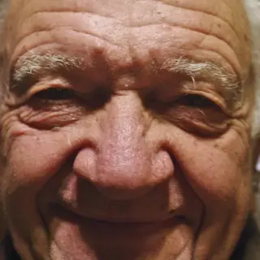

AU6 · AU7 · AU12AU 6·7·12AU4 · AU17AU 4·17
AU1 · AU2 · AU4AU 1·2·4
AU4AU 4
No AU found
AU4 · AU12 · AU25AU 4·12·25
AU4 · AU6 · AU10AU 4·6·10
AU7AU 7
AU4AU 4
AU10 · AU12 · AU25AU 10·12·25
AU6 · AU12 · AU25AU 6·12·25
AU4 · AU25 · AU26AU 4·25·26
AU4 · AU6 · AU17AU 4·6·17
AU4 · AU17AU 4·17
AU4 · AU6 · AU17AU 4·6·17
AU4 · AU6 · AU17AU 4·6·17
AU4 · AU6 · AU12AU 4·6·12
AU4 · AU25 · AU26AU 4·25·26
AU1 · AU2 · AU4AU 1·2·4
AU14 · AU17 · AU24AU 14·17·24
AU6 · AU12 · AU25AU 6·12·25
AU4 · AU6 · AU25AU 4·6·25
AU1 · AU15 · AU17AU 1·15·17
AU6 · AU25 · AU26AU 6·25·26
AU4 · AU5 · AU25AU 4·5·25
AU7 · AU15 · AU17AU 7·15·17
AU1 · AU2AU 1·2
AU4 · AU7 · AU25AU 4·7·25
AU6 · AU12 · AU25AU 6·12·25
AU1 · AU4 · AU12AU 1·4·12
AU4 · AU14 · AU17AU 4·14·17
AU4AU 4
No AU found
AU10 · AU12 · AU25AU 10·12·25
AU4AU 4
AU4 · AU7AU 4·7
No AU found
AU4 · AU6 · AU25AU 4·6·25
AU4AU 4
AU4AU 4
AU1 · AU4 · AU7AU 1·4·7
AU4 · AU7 · AU17AU 4·7·17
AU7 · AU12 · AU25AU 7·12·25
AU4 · AU15 · AU17AU 4·15·17
AU1 · AU2 · AU4AU 1·2·4
AU1 · AU2 · AU4AU 1·2·4
AU4 · AU7 · AU10AU 4·7·10
AU4 · AU12 · AU17AU 4·12·17
AU6 · AU12 · AU25AU 6·12·25
PhD researcher · Experimental Psychology, UCL
Yifan Bian
How real faces show emotion, and how well AI can read them.
I study spontaneous facial expressions (real reactions, not acted ones), test the AI that tries to read them, and build tools that show what a face does and doesn’t tell you.
Get in touch →

![Crossread on President Bill Clinton’s remarks at the White House on 26 January 1998, in one continuous session with a pointer. The whole main screen plays: labels on his face for each facial movement, the emotion model’s labels against his own usual range, his eyes, voice and words, and the timeline. A click on the face panel opens a close-up beside a drawing of his face, slowed to half speed, each movement lighting its region; pointing at one names its muscle. Then the denial is selected on the timeline and a second window added: the 26 seconds before it play beside it, every channel compared on a card. Then the map of moments grows to full screen. Then, on the Emotions page, the whole recording as a clock, and a drag along an arc magnifies the last minute.](media/crossread/clinton-denial-take-poster-1440.jpg)
![Literature Galaxy’s map of papers in Galaxy 3D, full screen, with a pointer: the library’s papers as glowing points in topic colours, turned by a drag. In the side panel’s Designs, choosing spontaneous (unposed) expressions lights its 173 papers, and a card lists the topics and datasets that go with it. In Statements, filtered to contested ones, choosing “Duchenne smiles (with eye constriction) indicate genuine enjoyment” lights the papers on each side; its card gives 5 papers for, 3 partly agreeing and 8 against, and compares the study designs behind each side. Then the challenging and supporting papers are lit in turn, and the view flies in to the supporting papers.](media/literature-galaxy/literature-galaxy-tour-poster.jpg)
![Face Mirror, then Face Value, with a synthetic clay head. In Face Mirror the head wrinkles its nose and raises its upper lip; the page names AU9 nose wrinkler and AU10 upper lip raiser and lists what studies report: pain when people felt it, disgust when observers saw it. A click opens the same face in Face Value, which reads “Unpleasant feeling, most likely pain, disgust or contempt” with strong evidence and an evidence grid by felt, posed and observed studies. Adding the brow lowerer turns the reading to pain. The head is then cleared and a smile built from the cheek raiser and the lip corner puller, read as a pleasant feeling, most likely happiness, amusement or joy. Last, the timeline replays made-up face-tracking data: seven movement tracks and a voice track, a playhead, and the head replaying each moment. A smile reads as a pleasant feeling; lips parting while the voice is loud read “Not specific to any state. Check speech or breathing first”.](media/face-value/face-value-mirror-tour2-poster.jpg)
![Self-Discovery on the Mac, with demo data, in one session. From Now, a check-in opens; feelings are picked from a sky of them (anxious, stressed, each with what it means); a few words say what happened, why, where it was felt and the urge; then what lifted and what weighed on the day. Back in the main window, the week shows mood and energy against the usual range. On Insights, the question “Does cycling actually improve my mood?” is answered from the data: later mood higher by 1.5 points (+0.9 to +2.1), associations, not causes, with the evidence. Then a Lab experiment two weeks in, not clear yet.](media/self-discovery/self-discovery-tour-poster.jpg)